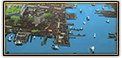
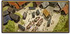

在欧陆风云4里，世界被分为大洲、地区、州、省份。省份（province）是最小的部分。它们有助于一个国家的税收、人力、动荡、过度扩张和贸易。
每个省都有一个小地理区域，中心有一个城镇。城市目前没有美化功能，但像省份一样，在1.4补丁后可以改省份的名字。省份和城市名称可以通过在省份标签上单击它们来更改。随着国家财富的扩张，省份的名称也可以是动态的和脚本是独特的，无论是省份的所有者，省份文化或省份文化组（在该优先事项）。自DLC常识推出后，玩家可以提升省份发展度。1.28版本之后，无需DLC常识也可以提升省份发展度。
游戏中总共有3272个陆地省份。
术语和机制
省份是欧陆风云4中任何国家的心脏。 他们提供收入，人力和贸易货物。
发展度
- 主条目：发展度
在1.12版本中引入，发展度是衡量一个省份财富和生产力的标准。省份发展度的增加有助于提高本地贸易力量、陆海军力量的上限、补给上限，以及增加在本省可以建造的建筑物总数。发展度进一步分为税收、生产和人力。每一项都可以用对应的君主点进一步提升。
税收
- 主条目：税收
每个省都有税收基数，大致相当于该地区的人口和财富。游戏所显示的数额是从该省每个月获得的税收，且是在所有修正都已统计之后。
生产
每个省产生特定类型的货物。完整的清单在贸易中列出。游戏中显示的数字是每月生产收入。生产效率增加可以的进一步提高收入。
人力
- 主条目：人力
每一个省都为一个国家的人力池提供一定的后备人力，并受理念、政府类型和建筑等因素的影响。
防御
- 主条目：陆战
要塞是省份的防御设施。如果省份建筑了要塞，敌人便不容易控制这个省份。一个非1级的要塞在本省份和周围的省份周围有一个控制区，军队不能穿过被敌军控制的要塞。在和平时期，可以通过封存要塞的方法来节省其维修成本，不过在战争开始的时候，由于它没有驻军，因此不能够去保卫省份。 国家应该在战略位置重要的省份修建一个要塞（虽然ai很少去新建一个要塞，他们会倾向于去升级已有的要塞）。 首都省份会获得一个免费的一级要塞，它没有控制区，并且拥有较少的驻军。
贸易
- 主条目：贸易
与生产密切相关的是贸易。每一个省都有一定的贸易力量，并对其所依附的贸易节点贡献贸易价值。
自治度
- 主条目：自治度
自治度是国家对一个省行使控制权的程度。数值越低，政府控制的力度也就越强。自治度决定一个国家对一个国家的生产能力，一个拥有100％地方自治权的省不会交税，也不会提供人力，贸易力量减半，并且使他国夺取省份的代价更低。其中自治领地的自治度最低为75％而直属州为0％ 所以如果希望在某些省份获得更多的税收、人力，可以把那个地区设置为直属州。
叛乱
- 主条目：叛乱
在对自己不利的时候，各地方政府可能会反对中央政府。这在游戏中表现为叛乱。省份信息界面和稳定与扩张界面会显示可能出现的叛军类型。增加省份的自治度可以减少10叛乱度，但是这也会减少省份的收入和人力以及国家的专制度。
荒废度
当一个省份被围攻或者占领或者省份被劫掠时会得到一个0到100%的  省份荒废度的值，当这个值为100%时会得到以下效果:
省份荒废度的值，当这个值为100%时会得到以下效果:
| −200% | 本地商品产出修正 | |
| −50% | 补给上限修正 | |
| −200% | 思潮传播速度 | |
| +10% | 本地提升发展度花费 | |
| −200% | 本地人力修正 | |
| −200% | 本地水手修正 | |
| −25% | 本地敌军移动速度 | |
| −25% | 本地友军移动速度 |
荒废度会因以下因素改变：
| 月度变化 | 因素 |
|---|---|
| +0.1 | 被攻城中（包括友方） |
| +0.1 | 被封锁中（包括友方） |
| +0.2 | 被占领 |
| −0.08 | 被拥有者控制 |
| −0.83 | 在友方一个要塞的要塞控制区中（要塞未被攻占） |
| −0.25 | 专制主义法令（需要激活DLC |
| −0.05 | 直属州拥有都主教区（需要激活DLC 第三罗马） |
每次提升省份发展度能降低5%的荒废度（会经过当地自治度折算）。
核心和宣称
核心代表了一个国家。一个不存在国家的核心呈灰色状态。一个省份可以拥有不限量的核心。一个国家可以通过边境冲突或间谍行为制造他国省份的 宣称。
文化和宗教
每个省份都有自己的文化和宗教。一个拥有非主流文化和非正统宗教的省份一般比较容易叛乱且效率低下。
建筑
- 主条目：建筑
一个国家可以通过建造建筑的方式提升省份的各种数值。可建造的建筑上限由发展度决定。
首都
- 主条目：首都
游戏中，每个国家都有自己的首都省份。首都是一个国家的政治，文化中心。使节团在空闲时间会停留在首都，而使节团的行程时间取决于首都和目标省份之间的距离。可以花费200行政点数迁都（取决于原省份和新省份发展度的差异，200行政点数是基础花费）。如果贸易本埠同时也在首都，那么迁都时则会一并移动贸易本埠而无需支付移动贸易本埠的费用。
贸易本埠
每个国家有一个“贸易本埠”省份，默认位于首都，在贸易本埠所在的节点将自动收集贸易收入而无需商人，且在非贸易本埠节点收集贸易收入会受到-50%贸易竞争力的惩罚。
移动贸易本埠
|
|
只适用于DLC国富论激活时。 |
如果想要移动贸易本埠，那么需要花费200  外交点数。迁都时，如果贸易本埠同时也在首都，将会自动移动贸易本埠，无需花费外交点数。
外交点数。迁都时，如果贸易本埠同时也在首都，将会自动移动贸易本埠，无需花费外交点数。
海峡
游戏中有些省份之间没有在陆地上直接接壤，而是隔海相望但通过虚线连接的形式接壤，这些虚线被称为海峡。下表中包括了所有游戏中出现的海峡。
马略卡 （333） −梅诺卡 （4559）伊维萨 （4560） −马略卡 （333）大加那利 （366） −特内里费 （4565）隆德 （6） −西兰 （12） 厄勒海峡西兰 （12） −菲英 （14） 大贝尔特海峡菲英 （14） −东日德兰 （4142） 萨姆斯岛海峡菲英 （14） −科灵 （4149） 小贝尔特海峡菲英 （14） −洛兰 （1983） 朗厄兰海峡西兰 （12） −洛兰 （1983） 斯托海峡卡拉布里亚 （123） −墨西拿 （124） 墨西拿海峡君士坦丁堡 （151） −科贾埃利 （316） 博斯普鲁斯海峡梅诺米尼 （911） −密歇根 （945）斯德哥尔摩 （1） −奥兰 （1930）奥兰 （1930） −奥布 （27）科孚 （142） −伊庇鲁斯 （144） 克基拉海峡伊庇鲁斯 （144） −亚该亚 （1773）雅典 （146） −纳克索斯 （164）埃迪尔内 （149） −比加 （2296） 达达尼尔海峡萨瑟兰 （4110） −外赫布里底群岛 （253）内赫布里底群岛 （4364） −外赫布里底群岛 （253）内赫布里底群岛 （4364） −萨瑟兰 （4110）内赫布里底群岛 （4364） −阿盖尔 （4363）萨瑟兰 （4110） −奥克尼 （369）阿姆斯特丹 （97） −弗里斯兰 （100）泽兰 （96） −根特 （1865）周防 （1017） −筑前 （1818）丰后 （1014） −伊予 （4186） 丰后水道伊予 （4186） −安艺 （1825）雷州 （2159） −琼州 （666） 琼州海峡列巴尔 （36） −厄塞尔 （35）厄塞尔 （35） −库尔迪加 （39） 伊尔贝海峡柔佛 （597） −锡亚克 （620）林加 （659） −占碑 （2677） 贝哈拉海峡努特卡 （972） −撒利希 （874） 胡安德富卡海峡努特卡 （972） −斯阔米什 （973）努特卡 （972） −夸扣特尔 （974）厄基克瓦 （2569） −乌纳马基克 （982）辛迪加 （984） −伊佩奎特克 （983）切斯迪克 （997） −塔卡姆库克 （981）台伦 （1050） −萨哈林 （1033） 鞑靼海峡塔朱拉 （1215） −穆哈 （387） 曼德海峡威尼斯 （112） −特雷维索 （1774）施塔德 （54） −迪特马尔申 （4141）阿波 （1820） −摄津 （1021） 纪伊水道陆奥 （4131） −渡岛 （4193） 津轻海峡千岛群岛 （1032） −十胜 （1852） 国后水道巴加莫约 （1199） −桑给巴尔 （1201）科西嘉 （1247） −萨萨里 （127） 博尼法乔海峡盖提夫 （394） −巴林 （396）卡塔尔 （395） −巴林 （396）三宝颜 （4354） −布格拉斯 （4351）萨马 （654） −比科尔 （2699） 圣贝纳迪诺海峡哈马黑拉 （648） −特尔纳特 （649）哈马黑拉 （648） −蒂多雷 （650）塔拉纳基 （1107） −怀塔哈 （2738） 库克海峡希俄斯 （2348） −苏拉 （318）希俄斯 （2348） −比加 （2296）卡法 （285） −马特雷加 （2447） 刻赤海峡海达 （2022） −特林吉特 （976）渥太华 （2587） −俄克欧拉 （2521）渥太华 （2587） −索托 （1001）明根 （2576） −安蒂科斯蒂 （2578）艾尔郡 （249） −乌尔斯特 （4121） 北海峡马杜赖 （536） −万尼 （2100） 保克海峡奥里诺科三角洲 （2803） −特立尼达 （502）圣文森特 （500） −圣卢西亚 （499）圣卢西亚 （499） −马提尼克 （498）马提尼克 （498） −多米尼克 （497）瓜德罗普 （496） −安提瓜 （495）安提瓜 （495） −圣基茨 （494）苏腊巴亚 （628） −马都拉 （2692）巴厘 （631） −龙目 （2693）龙目 （2693） −松巴哇 （632）松巴哇 （632） −弗洛勒斯 （633） 松巴海峡弗洛勒斯 （633） −东帝汶 （2695） 翁拜海峡布顿 （2716） −肯达里 （642）班乃 （2700） −布格拉斯 （4351）莱特 （4353） −卡拉加 （4355） 苏里高海峡班乃 （2700） −民都洛 （4350） 塔布拉斯海峡泰泰 （4356） −民都洛 （4350） 民都洛海峡安汶 （646） −斯兰 （647）邦加 （2678） −巴邻旁 （622）民丹 （2686） −柔佛 （597） 柔佛海峡帕拉 （2929） −马拉若 （2890）贝伦 （748） −马拉若 （2890）梅诺米尼 （911） −渥太华 （2587）杰尔巴 （2954） −泰塔温 （353）万丹 （624） −图朗巴望 （623） 巽他海峡莫戈斯坦 （431） −霍尔木兹 （2999）凯韦辛 （398） −霍尔木兹 （2999） 霍尔木兹海峡雅典 （146） −埃维亚 （3003）埃维亚 （3003） −纳克索斯 （164） 卡菲雷夫斯海峡萨沃尼亚 （31） −凯努 （4152）休达 （1751） −直布罗陀 （226） 直布罗陀海峡莱特 （4353） −宿务 （4352）布格拉斯 （4351） −宿务 （4352） 塔尼翁海峡
气候和天气
每个省份都有自己的气候状况并且根据地理位置的不同，冬季和雨季对省份的影响也不同。游戏中的有专门显示气候和天气的地图类型。
极地
极地省份的效果是：[1]
| −10 本地移民增长人数 | |
| −40% 补给上限修正 | |
| +1 本地敌军月度损耗 | |
| −1 本地可建筑数量上限 | |
| +50% 本地提升发展度花费 |
干旱
干旱省份的效果是：[2]
| −10 本地移民增长人数 | |
| −20% 补给上限修正 | |
| +1 本地敌军月度损耗 | |
| +10% 本地提升发展度花费 |
热带
热带省份的效果是：[3]
| −10 本地移民增长人数 | |
| −30% 补给上限修正 | |
| +2 本地敌军月度损耗 | |
| +5% 本地提升发展度花费 |
| 只适用于DLC达摩激活时。 |
- 参见：雨季事件
温和雨季
温和雨季省份的效果是：[7]
| +0.5 | 敌军损耗 | |
| −20% | 友军移动速度 | |
| −20% | 敌军移动速度 |
修正
贸易中心
贸易中心现在可以进行管理了。
贸易中心可以手动升级或降级，但无法创建或删除。但是，一些事件（如殖民地19）允许天然港口成长为贸易中心，完成  克罗地亚的任务也会在
克罗地亚的任务也会在
将一个贸易中心从1级升级到2级的基本花费是200 杜卡特，从2级升级到3级的基本花费是1000
杜卡特，从2级升级到3级的基本花费是1000 杜卡特。把贸易中心降级将花费10点
杜卡特。把贸易中心降级将花费10点 威望，但只有在国家威望为正时才能使用此选项。无论是通过战争还是通过外交行动使省份的所有权发生了变化，贸易中心等级将自动下降1级，最低下降到1级。
威望，但只有在国家威望为正时才能使用此选项。无论是通过战争还是通过外交行动使省份的所有权发生了变化，贸易中心等级将自动下降1级，最低下降到1级。
贸易中心的条件（1.31新增）：
- 升至2级：
- 省份所在州为直属州或省份在贸易公司内
- 省份发展度
 15以上
15以上
- 省份发展度
- 升至3级：
- 省份所在州为直属州或省份在贸易公司内
- 省份发展度30以上
- 省份发展度
- 省份持有国家所拥有的3级贸易中心（世界级港口和世界贸易中心）小于所拥有的
 商人数量
商人数量
- 省份持有国家所拥有的3级贸易中心（世界级港口和世界贸易中心）小于所拥有的
所有贸易中心列表见 经济省份列表。
贸易中心不同等级的效果 [10] :
| 图标 | 名称 | 层级 | 效果 | 描述 |
|---|---|---|---|---|
| 天然良港 | 沿海一级 | 省份修正： | 这个省份是一个天然的港口和贸易中心。本地的商人从几个世纪前开始就在这里活动了，尽管缺乏国家投资，贸易基础设施也在不断完善。 | |
| 中转港 | 沿海二级 | 省份修正： | 这个省份是一个主要的贸易中转站。整个地区的商人都会在这买卖货物。 | |
|  | 世界级港口 | 沿海三级 | 省份修正：
州修正: 国家修正: |
这个省份是世界上最主要的港口之一。 全世界的商品都通常经由此处运转，这座城市本身就像许多王国一样出名。
1444年开局的世界港口：
|
| 市场 | 内陆一级 | 省份修正： | 这个省份是一个天然的贸易中转点。本地的商人从几个世纪前开始就在这里活动了。 | |
|  | 市镇 | 内陆二级 | 省份修正： | 这座城市是一个重要的区域贸易市场，整个地区的商人都会在这里交易货物。 |
| 世界贸易中心 | 内陆三级 | 省份修正：
州修正: |
这个省份是世界上最重要的贸易中心之一。 这里几乎没有买不到的商品，这座城市本身就像许多王国一样出名。 |
河口
河口能提供 +10 点本地贸易力量，除非该河口被两个省份共有，此时每个省份获得 +5 本地贸易力量[10]
涅瓦 （33）里加 （38）梅梅尔 （40）但泽 （43）汉堡 （44）费拉拉 （113）科 （167）南特 （172）阿基坦 （174）普罗旺斯 （201）塞维利亚 （224）里斯本 （227）波尔图 （231）伦敦 （236）叶迪山 （282）亚速 （286）罗塞塔 （362）达米埃塔 （363）巴士拉 （408）希尔万 （421）阿斯特拉罕 （464）特达 （504）贝拉纳杜 （543）孟加拉三角洲 （561）达卡 （564）广州 （667）拉普拉塔河 （778）瓜亚基尔 （819）奇努克 （873）奇蒂马查 （893）桑蒂 （932）切萨皮克 （950）莱纳佩 （956）曼哈顿 （965）斯塔达科纳 （994）卡约尔 （1113）贝宁 （1147）克利马内 （1192）比萨拉比亚 （1756）勃生 （1815）苏州 （1822）斯德丁 （1858）不莱梅 （1874）东弗里西亚 （1931）坎纳斯马 （2084）海防 （2372）普竹溪 （2376）曼加扎 （2445）科辉特 （2499）塔拉戈纳 （2988）恩戈约 （4079）海州 （4196）海牙 （4383）大光 （4399）
宗教中心
宗教中心自带  −5% 本地传教力量。[10]
−5% 本地传教力量。[10]
罗马 [118]麦加 [385]卡尔巴拉 [409]拉萨 [677]多亚巴 [2075] – 1499年以后瓦拉纳西 [2095]康提 [2099]马什哈德 [2221]塞马沃 [2311]
在触发“新教改革”事件后，新教、改革宗与圣公教的宗教中心会出现在它们起源的地方，其中新教与改革宗最多有3个，圣公教只有一个。
在触发“锡克教信仰”事件后，同样会在目标省份创造一个宗教中心。该宗教中心修正不会和任意宗教关联。
在触发“伊势神宫”事件后，如果省份所有者为非原始宗教组，或者作为原始宗教组，没有转为神道教，
其他特殊地区
以下省份也有持续的省份修正:
| 名称 | 省份 | 奖励[10] | 限制 |
|---|---|---|---|
| +20.0 本地贸易力量 | — | ||
| +10.0 本地贸易力量 | — | ||
| +5.0 本地商品产出 | — | ||
| +3.0 本地商品产出 | — | ||
|
+3.0 本地商品产出 | — | |
| +1.5 本地商品产出 | 直到 | ||
|
+2.0 本地商品产出 | — | |
| 始于 | |||
| +4.0 本地商品产出 | — | ||
| +2.5 本地商品产出 | — | ||
| +3.0 本地商品产出 | 直到 | ||
| — | 始于 | ||
|
+2.0 本地商品产出 | 始于 | |
| — | 始于 | ||
| — | 始于 | ||
| +1.0 本地商品产出 | 始于 | ||
| +0.5 正统信仰容忍 | 直到 | ||
| 直到 | |||
| — | |||
| 直到 | |||
| 始于 |
直属州与自治领地
- 主条目：直属州与自治领地
直属州与自治领地是1.16 版本引入的新机制，用以代替原本的“海外领土”机制。该系统引入了二段造核的过程。为一个刚征服的省份造核会使之获得自治领地核心（除非它所在地区已是该国的直属州，则其造核花费会包括直属州核心）。将一自治领地地区转换成直属州，需要该地区内所有该国拥有的省份用有自治领地核心，日后亦要付出额外的维护费，之后还要为之造上直属州核心。
不属于直属州的省份最低 自治度为75%，与之前版本的海外领土相同。
地形
每个省份都有不同的地形效果。地形的效果有好有坏。不同的地形对于陆战来说可能就是决定胜败的重要因素。地形和它们的效果请见下表：
| 地形 | 补给上限 |
本地防御效率 |
移动花费 |
攻击方惩罚 |
当地发展成本 |
|---|---|---|---|---|---|
 冰川 冰川
|
+2 | +25% | −1 | +50% | |
 农田 农田
|
+10 | +10% | −5% | ||
 森林 森林
|
+4 | +25% | −1 | +20% | |
 丘陵 丘陵
|
+5 | +10% | +40% | −1 | +25% |
 树林 树林
|
+6 | +10% | −1 | +15% | |
 山脉 山脉
|
+4 | +25% | +50% | −2 | +35% |
 草原 草原
|
+8 | ||||
 丛林 丛林
|
+5 | +50% | −1 | +35% | |
 沼泽 沼泽
|
+5 | +30% | −1 | +25% | |
 沙漠 沙漠
|
+4 | +5% | +50% | ||
 海岸沙滩 海岸沙滩
|
+4 | +35% | |||
 海岸线 海岸线
|
+6 | +25% | |||
 旱地 旱地
|
+7 | +5% | |||
 高原 高原
|
+6 | +10% | +40% | −1 | +20% |
 稀树草原 稀树草原
|
+6 | +15% | |||
 大草原 大草原
|
+6 | +20% |
田地、草地和旱地地形将额外 +1 可能的建筑位置
命名
省份和城市名均可通过在省份界面中通过点击进行修改。 当使用国富论扩展包时，省份名称也可以是动态的，并根据省份所有者、省份文化或省份文化组（按优先级）特殊化。
岛屿
- 主条目：岛屿
参考资料
- ↑ 出处请见/Europa Universalis IV/common/static_modifiers/00_static_modifiers.txt (Static modifiers#Arctic)。
- ↑ 出处请见/Europa Universalis IV/common/static_modifiers/00_static_modifiers.txt (Static modifiers#Arid)。
- ↑ 出处请见/Europa Universalis IV/common/static_modifiers/00_static_modifiers.txt (Static modifiers#Tropical)。
- ↑ 出处请见/Europa Universalis IV/common/static_modifiers/00_static_modifiers.txt (Static modifiers#Mild Winter)。
- ↑ 出处请见/Europa Universalis IV/common/static_modifiers/00_static_modifiers.txt (Static modifiers#Normal Winter)。
- ↑ 出处请见/Europa Universalis IV/common/static_modifiers/00_static_modifiers.txt (Static modifiers#Severe Winter)。
- ↑ 出处请见/Europa Universalis IV/common/static_modifiers/00_static_modifiers.txt (Static modifiers#Mild Monsoon).
- ↑ 出处请见/Europa Universalis IV/common/static_modifiers/00_static_modifiers.txt (Static modifiers#Normal Monsoon).
- ↑ 出处请见/Europa Universalis IV/common/static_modifiers/00_static_modifiers.txt (Static modifiers#Severe Monsoon).
- ↑ 10.0 10.1 10.2 10.3 See in /Europa Universalis IV/common/centers_of_trade/00_centers_of_trade.txt